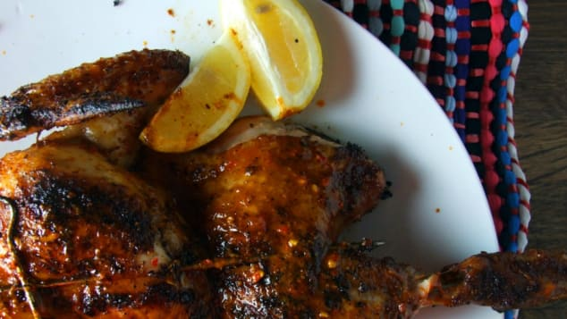

African Delicacy Lunch Menu
Here you can find variety of fine meals from the southern part of Sahara where they are well known for their cooking skills.
Jollof rice and egusi soup, Nigeria
- Price: $35.50.
- Ingredients: A simple, spicy one-pot dish comprising, at its most basic, rice, tomatoes, onions and pepper, it's often served at parties and other festive gatherings, along with other Nigerian favorites such as egusi soup (made with ground melon seeds and bitter leaf), fried plantains and pounded yam (iyan or fufu).
- Allergens: Contains fish, shellfish. May contain traces of nuts, soyabean & seeds.

Muamba de Galinha, Angola
- Price: $30.
- Ingredients: Also known as chicken muamba, this is a spicy, somewhat oily stew made with with palm oil or palm butter, garlic, chilis and okra. Variations of chicken muamba, such as poulet moambé, are to be found all over the Congo River region, where it's often served with cassava leaves and white rice.
- Allergens: Nuts used for food

African Delicacy Dinner Menu
Given that the first "barbecue" might well have taken place in Africa, this is a continent that can arguably claim to have invented cooking.
Piri piri chicken, Mozambique
- Price: $50.
- Ingredients: a succulent feast of chicken cooked with lime, pepper, garlic, coconut milk and piri piri sauce.
- Allergens: Nuts like cashew nuts are used.
- 
Other dishes for in African Delicacy Dinner Menu
- Pap en vleis/Shisa nyama, South Africa
- Bunny chow, South Africa
- Kapenta with sadza, Zimbabwe
- Chambo with nsima, Malawi
- Namibian venison, Namibia
- Nyama na irio, Kenya